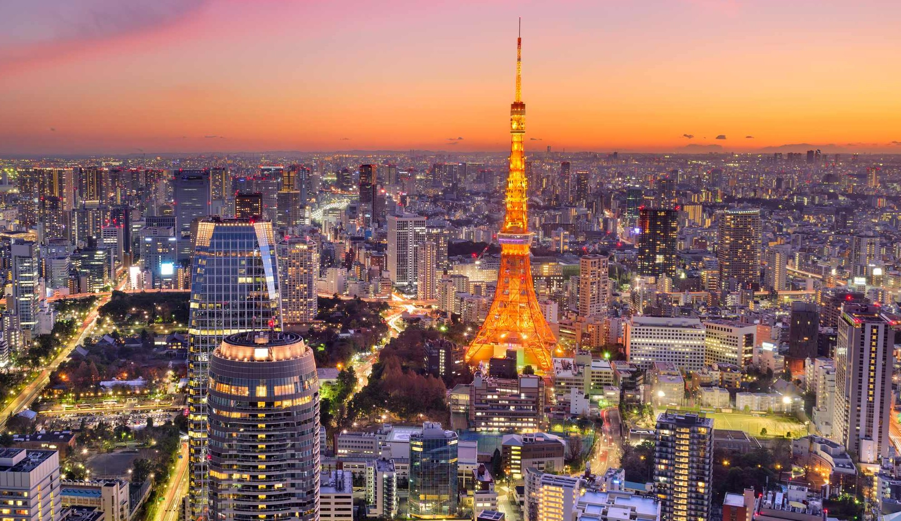

Conheça Tokyo

Tokyo é um destino fascinante que combina templos históricos, bairros movimentados, tecnologia de ponta e uma gastronomia incomparável, oferecendo ao visitante uma experiência única onde o antigo e o novo convivem em perfeita harmonia.